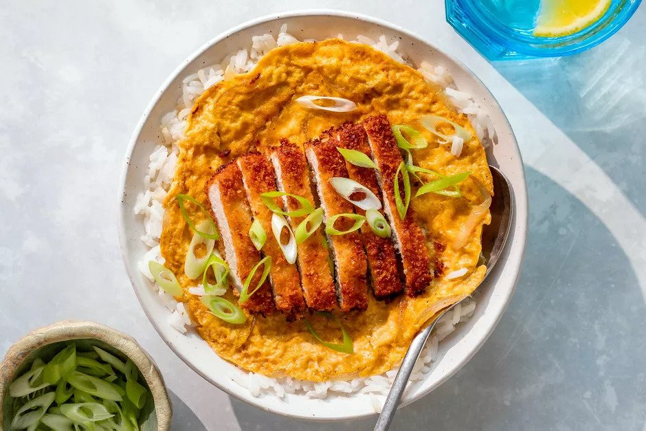

Katsudon

Homepage
Description
Katsudon is a Japanese food consisting of breaded, deep-fried pork cutlet over rice, topped with a partially beaten egg and
varying condiments. This dish takes its name from two Japanese words: tonkatsu and donburi, which mean
pork cutlet and rice bowl dish, respectively.
Interestingly, katsudon has a modern tradition of being eaten by Japanese students prior to important tests or school entrance exams.
This tradition was spurred by the katsu part of katsudon, as it's homophonous with another Japanese word meaning "to win" or
"to be victorious". As for this is recipe it is portioned for 4 servings.
Ingredients
- 2 center-cut boneless pork chops, pounded down to 1 centimeter thick
- Salt and ground black pepper
- All-purpose flour
- 5 large eggs, beaten, divided
- 1 cup panko
- Oil, for frying
- 1 ¼ cups dashi soup stock
- ⅓ cup soy sauce
- 2 Tbsp. mirin
- 1 Tbsp. sugar
- 1 medium onion, thinly sliced
- 4 cups steamed white rice
Steps
- Season the pounded pork chops with salt and pepper. Then, lightly dust an even coating of flour.
- Have a beaten egg in one bowl and have panko in another bowl.
- Add an even layer of oil to a cast-iron pan or skillet over medium heat. The oil is ready when you drop a panko breadcrumb into it and it sizzles.
- Dip the flour-coated pork into the beaten egg, coat both sides; then, transfer the pork to the panko and press it evenly into the meat.
- Lay the pork chops in the hot oil and cook for 5 to 6 minutes on each side for a total of 10 to 12 minutes or until golden brown and cooked through.
- Drain on a plate lined with a paper towel and then slice your tonkatsu into pieces.
- Put the dashi soup stock in a pan and heat on medium heat. Then, add the soy sauce, mirin, and sugar; bring to a boil and remove from heat.
- For 1 serving of katsudon, put 1/4 of the soup and 1/4 of the sliced onion in a small skillet, then simmer for a few minutes on medium heat.
- Add 1 serving of tonkatsu (half of 1 pork cutlet) to the skillet and simmer on low heat for a few minutes.
- Beat one of the other eggs in a bowl and bring the soup to a boil; then, pour the egg over the tonkatsu and onion.
- Turn the heat to low, cover with a lid, and cook until the egg has set; then, remove it from the heat.
- Place 1 serving of steamed rice (1 cup) in a rice bowl, top it with the simmered tonkatsu and serve. Repeat to make 3 more servings.